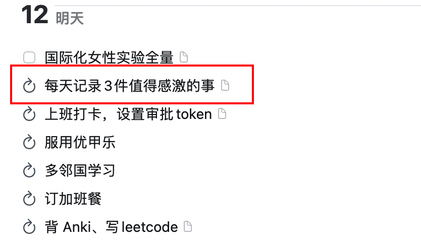
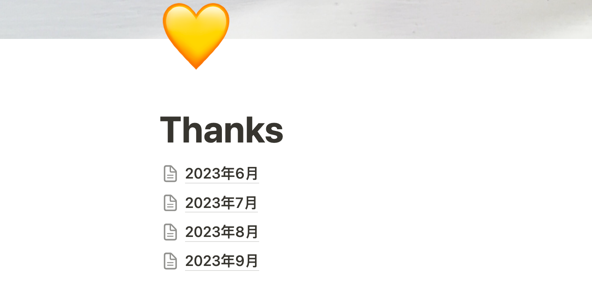

“对生活的感激程度其实就是生活的充实程度。当我们对生活麻木，对一切习以为常的时候，其实我们的生活就已经死亡了”
「哈佛幸福课」的第8节，讲得是感激的重要性。作者建议我们把感激培养成一种习惯，当我们感激时，副交感神经系统功能增强，使我们变平静，从而加强免疫系统。
在提到如何培养感激时，作者提了一个行动方式：每天睡前写下5件值得感激的事。
培养一个能力的最佳方式就是实践，通过一次又一次感激来培养感激，我从6月21日开始实施这个行动，不过我稍稍给自己降低了一点点要求，每天记录3条值得感激的事，我同时把这个行动项录入到 Things 中对我进行每日提醒。

我是用 Notion 来记录这些感激内容的，每个月新建一个新的页面，每天一个大标题。使用 Notion 我可以随时随地记录，比如在地铁上、公司里、家里，从第一天开始记录到今天已经将近4个月了。

每天的持续记录使我发现，原来我身边有那么多事值得感激，但我之前已经习以为常，认为这些都理所当然。在写感激过程中，感激最多的肯定是在背后支持我的家人，除此之外我还会感激之前没有意识到的事物，感激的对象也不止有实实在在的人，还有身边给我提供便利的物品。
比如下边这段：
最上边两条我感激了两位同事，一位帮我一起沟通绩效结果，另一位是我现在的 Leader，和我一起梳理一些重点项目；接下来我还感激了「哈罗单车」，那一天是个周五，天气很好，晚上下班早，我骑着单车从公司回家，一路上风景也很好；第二天8月5日是个周六，我早上开车回老家，路上狂风大作电闪雷鸣遇上了大暴雨和大雾，我和我的车经过4小时路程，它安全的把我带回了家；最下边那条，是我回家后带念出去玩，突然感觉她长大了，之前在游乐场玩的时候一定要我陪着，这一次她可以自己玩耍了。
再来随便看两天的：

这两天也是周末，我感激了华为安装师傅、感激了家具安装师傅、感激了木工师傅、感激了北京的交通、感激了念念、感激了游戏厅的抓娃娃机。
在我写这篇流水账翻看这些感激记录的过程中，又能回忆起当时的喜悦，一定程度上起到了日记的作用。每条记录用一句话描述，不会有很大的写作压力，刚开始确实不容易发现那么多值得感激的事，随着自己记录的越来越多，就会越擅长发现生活中值得自己感激的地方。
有时我还会感激自己，比如下边几条：
在记录感激的时候，我不会强迫自己，如果某一天心情实在糟糕，可以允许自己只写一两条，某一天过得充实的时候也写过六七条。
通过记录这几个月的感激，我能很明显感受到自己情绪好了很多，不再那么偏激，能够从积极的方面思考问题了，注意力会放在积极正面的事情上，和其他人打交道时会思考对方有什么优点值得我学习，有时我还会把之前遇到后会非常生气的事换个思路去看。
我们应该心怀感激，而不是等到不幸发生时才意识到之前的自己错过了多么美好的时光。
世界上有很多美好的事物，但我们很快就会适应且不再察觉它们。每天两次花一分钟时间留意周遭的一切，花一分钟的时间，在上班的路上看看美丽的草地、青翠的树、美丽的雪。晚上用一分钟去回忆，回想你度过的一天，写下让你心怀感激的事物。